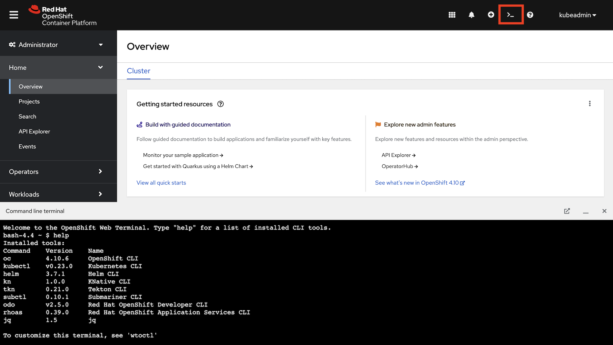

Deploy Microservices
This section guides you through the deployment of the three microservices used throughout the tutorial.
Each of the microservice is will be deployed into the tutorial namespace, and is managed using a Deployment that is annotated with:
sidecar.istio.io/inject: "true"This annotation, combined with the fact that the tutorial namespace is part of the mesh (thanks to the ServiceMeshMemberRoll created in the Setup section) means that each microservice has an associated Istio "sidecar" to manage traffic as illustrated below. Read the Istio documentation to learn more about the traffic management and sidecar (Envoy-based) proxies.

Verify Login, Namespace, and Tutorial Files
Make sure you are logged in
kubectl config current-contextand you have setup the project/namespace
kubectl create namespace tutorialkubectl config set-context $(kubectl config current-context) --namespace=tutorialMake sure istioctl is in your PATH:
istioctl versionclient version: 1.9.4
control plane version: 1.9.4
data plane version: 1.9.4 (2 proxies)If you installed the OpenShift Web Terminal during the Setup & Installation, refresh the OpenShift Web Console and start a Web Terminal using the terminal icon in the top-right.

The terminal session is pre-configured with a ~/.kube/config file. This means oc and kubectl are already logged in. Confirm this by running:
oc whoamiThis command will print your username. You can use kubectl to verify this too:
kubectl config current-contextExecute the following command to create the tutorial namespace and set it as the current context:
oc new-project tutorial ; oc project tutorialBefore we start setting up the environment, let’s clone the tutorial sources and set the TUTORIAL_HOME environment variable to point to the root directory of the tutorial:
git clone https://github.com/redhat-scholars/istio-tutorial istio-tutorialexport TUTORIAL_HOME="$(pwd)/istio-tutorial"cd $TUTORIAL_HOME
The OpenShift Web Terminal is not a persistent environment. The istio-tutorial folder, TUTORIAL_HOME, and set environment variables will be lost if the OpenShift Web Terminal is closed or idled after a few minutes of inactivity. Return to this section and run the git clone, export, and cd commands again if necessary to reconfigure a Web Terminal session.
|
-
Download the OpenShift CLI (
oc) from the help menu using (? icon) in the top-right of the OpenShift Web Console, and take note of the Copy login command link.
-
Unzip the CLI and add it to your
PATH. -
Login via the CLI by pasting the value of the Copy login command into your terminal.

-
Execute the following command to create the
tutorialnamespace and set it as the current context:oc new-project tutorial ; oc project tutorial
Before we start setting up the environment, let’s clone the tutorial sources and set the TUTORIAL_HOME environment variable to point to the root directory of the tutorial:
git clone https://github.com/redhat-scholars/istio-tutorial istio-tutorialexport TUTORIAL_HOME="$(pwd)/istio-tutorial"cd $TUTORIAL_HOMEDeploy the Customer Service
|
You will deploy container images that were previously built for this tutorial. It’s possible to deploy your own version of these images. If you want to build and deploy custom container images for this service using Quarkus click here. If you’d prefer to use Spring Boot click here. |
|
If you choose to build custom versions of the container images, don’t forget to modify the |
Deploy the customer application using the YAML files provided in the tutorial content:
kubectl apply -f <(istioctl kube-inject -f customer/kubernetes/Deployment.yml) -n tutorialkubectl create -f customer/kubernetes/Service.yml -n tutorialkubectl get pods -w -n tutorial-
Deploy the customer application using the Deployment.yml. This Deployment has the
sidecar.istio.io/inject: "true"annotation, which means Istio will inject a sidecar container to manage network traffic:kubectl apply -f customer/kubernetes/Deployment.yml -n tutorial -
Create a Service so the customer application Pods have a stable DNS entry on the cluster:
kubectl create -f customer/kubernetes/Service.yml -n tutorial -
Verify that the customer application Pod has started and all containers are reporting
READY:kubectl get pods -w -n tutorial
The output from the get pods command will eventually show that 2/2 containers are in the READY status like so:
NAME READY STATUS RESTARTS AGE
customer-5f5d9f8767-dmc4f 2/2 Running 0 5m24sPress Ctrl+C to exit the watch (-w) command when all containers are reporting READY.
The spec.replicas for in the Deployment.yml is set to 1, so why is does the get pods command specify that 2 of 2 containers are ready? The reason is that Istio injected the sidecar container that will be used to manage network traffic!
You can use kubectl describe pods -n tutorial to inspect the customer application’s Pod and see the Istio annotations and that a second container was automatically added to the Pod spec by the Istio operator.
Configure Ingress for the Customer Service
Since the customer service is the one our users will interact with, let’s create a Gateway and VirtualService that will enable us to direct incoming traffic to the application.
The Gateway resource configures a load balancer at the edge of the mesh to receive incoming TCP/HTTP traffic. The VirtualService will define traffic routing rules to send traffic matching specific URL patterns to the customer service.

Deploy the Gateway and VirtualService using the following command:
kubectl create -f customer/kubernetes/Gateway.yml -n tutorialThe Gateway and VirtualService are logical constructs that are used to configure Istio traffic management. All traffic into the mesh will come via the istio-ingressgateway deployed in the istio-system namespace. Use the following command to confirm the istio-ingressgateway components are deployed:
kubectl get all -l app=istio-ingressgateway -n istio-systemThe output of the above command will differ slightly between Minikube and OpenShift:
istio-ingressgateway LoadBalancer 10.101.82.250 <pending> 15020:31582/TCP,80:31380/TCP,443:31390/TCP,31400:31400/TCP,15029:30818/TCP,15030:32542/TCP,15031:30106/TCP,15032:32284/TCP,15443:31080/TCP 19mNAME READY STATUS RESTARTS AGE
pod/istio-ingressgateway-6f7f4b8778-7s7zg 1/1 Running 0 175m
NAME TYPE CLUSTER-IP EXTERNAL-IP PORT(S) AGE
service/istio-ingressgateway ClusterIP 10.217.4.72 <none> 15021/TCP,80/TCP,443/TCP 175m
NAME READY UP-TO-DATE AVAILABLE AGE
deployment.apps/istio-ingressgateway 1/1 1 1 175m
NAME DESIRED CURRENT READY AGE
replicaset.apps/istio-ingressgateway-6f7f4b8778 1 1 1 175m
NAME HOST/PORT PATH SERVICES PORT TERMINATION WILDCARD
route.route.openshift.io/istio-ingressgateway istio-ingressgateway-istio-system.apps-crc.testing istio-ingressgateway 8080 NoneValidate Ingress
Confirm that traffic ingress and routing using the VirtualService is working by making a HTTP request to the customer application.
Get the Ingress URL
Obtain the ingress URL and store it in a GATEWAY_URL variable in your terminal:
export INGRESS_HOST=$(minikube ip -p istio-devnation)
export INGRESS_PORT=$(kubectl -n istio-system get service istio-ingressgateway -o jsonpath='{.spec.ports[?(@.name=="http2")].nodePort}')
export GATEWAY_URL=$INGRESS_HOST:$INGRESS_PORTexport GATEWAY_URL=$(kubectl get route istio-ingressgateway -n istio-system -o=jsonpath="{.spec.host}")
The GATEWAY_URL is used frequently throughout this guide. If you lose it, come back here to obtain it again. Use the command echo $GATEWAY_URL to print the URL.
|
Test the Ingress using cURL
Test the customer endpoint using cURL:
curl $GATEWAY_URL/customerThe following response should be returned. The UnknownHostException is included in the response because the preference and recommendation applications are not deployed yet.
customer => UnknownHostException: preferenceReview the Customer Application Logs
This command returns logs from the customer container, but not the istio-proxy sidecar container in the Pod:
kubectl logs \
$(kubectl get pods -n tutorial |grep customer|awk '{ print $1 }'|head -1) \
-c customer -n tutorialA stacktrace containing the UnknownHostException reported by the cURL command should be visible in the logs:
customer-6fc99b7bfd-5st28 customer Caused by: java.net.UnknownHostException: preferenceDeploy the Preference Service
|
You will deploy container images that were previously built for this tutorial. It’s possible to deploy your own version of these images. If you want to build and deploy custom container images for this service using Quarkus click here. If you’d prefer to use Spring Boot click here. |
|
If you choose to build custom versions of the container images, don’t forget to modify the |
Apply the Preference Service Resources
kubectl apply -f <(istioctl kube-inject -f preference/kubernetes/Deployment.yml) -n tutorialkubectl create -f preference/kubernetes/Service.yml -n tutorialThe deployment process for the preference application is the same as the deployment process for the customer application. The preference Deployment.yml is also annotated with sidecar.istio.io/inject: "true".
-
Deploy the preference application using the Deployment.yml:
kubectl apply -f preference/kubernetes/Deployment.yml -n tutorial -
Create a Service so the preference application has a stable DNS entry:
kubectl create -f preference/kubernetes/Service.yml -n tutorial
Verify that the preference application Pod has started. Press Ctrl+C to exit the watch (-w) command when all containers are reporting READY:
kubectl get pods -w -n tutorialValidate Preference Service Connectivity
Now that the preference service is deployed the customer service should return a different response to incoming HTTP requests. Verify this using cURL:
curl $GATEWAY_URL/customerThe response still reports an UnknownHostException, but this time it’s for the recommendation service. This is because the recommendation service is not yet deployed.
customer => Error: 503 - preference => UnknownHostException: recommendationReview the Preference Application Logs
kubectl logs \
$(kubectl get pods -n tutorial |grep preference|awk '{ print $1 }'|head -1) \
-c preference -n tutorialA stacktrace containing the UnknownHostException reported by the cURL command should be visible in the logs:
preference-v1-898764bdb-hz7s6 preference Caused by: java.net.UnknownHostException: recommendationDeploy the Recommendation Service
|
You will deploy container images that were previously built for this tutorial. It’s possible to deploy your own version of these images. If you want to build and deploy custom container images for this service using Quarkus click here. If you’d prefer to use Spring Boot click here. |
|
If you choose to build custom versions of the container images, don’t forget to modify the |
Apply the Recommendation Service Resources
kubectl apply -f <(istioctl kube-inject -f recommendation/kubernetes/Deployment.yml) -n tutorialkubectl create -f recommendation/kubernetes/Service.yml -n tutorialThe deployment process for the recommendation application is the same as the deployment process for the customer application. The recommendation Deployment.yml is also annotated with sidecar.istio.io/inject: "true".
-
Deploy the recommendation application using the Deployment.yml:
kubectl apply -f recommendation/kubernetes/Deployment.yml -n tutorial -
Create a Service so the recommendation application has a stable DNS entry:
kubectl create -f recommendation/kubernetes/Service.yml -n tutorial
Verify that the recommendation application Pod has started. Press Ctrl+C to exit the watch (-w) command when all containers are reporting READY:
kubectl get pods -w -n tutorialValidate Recommendation Service Connectivity
Now that the recommendation service is deployed the customer service should return a different response to incoming HTTP requests. Verify this using cURL:
curl $GATEWAY_URL/customerThe response will contain no errors, since the end-to-end flow of services has been deployed.
customer => preference => recommendation v1 from 'recommendation-v1-6cf5ff55d9-7zbj8': 1Review the Recommendation Application Logs
kubectl logs \
$(kubectl get pods -n tutorial |grep recommendation|awk '{ print $1 }'|head -1) \
-c recommendation -n tutorialNo errors should be reported in the logs. Instead you will see an incrementing counter:
recommendation request from recommendation-v1-6c75fc9857-d4npl: 1Updating & Redeploying
| This section is optional. Feel free to move on to the Observability section of this guide. |
When you wish to change code (e.g. editing the .java files) and wish to "redeploy", simply:
cd {servicename}/java/{quarkus|springboot|vertx}vi src/main/java/com/redhat/developer/demos/{servicename}/{Servicename}{Controller|Verticle}.javaMake your changes, save it and then:
mvn clean packagedocker build -t example/{servicename}:v1 .kubectl get pods -o jsonpath='{.items[*].metadata.name}' -l app={servicename}kubectl get pods -o jsonpath='{.items[*].metadata.name}' -l app={servicename},version=v1kubectl delete pod -l app={servicename},version=v1 -n tutorialWhy the delete pod?
Based on the Deployment configuration, Kubernetes/OpenShift will recreate the pod, based on the new docker image as it attempts to keep the desired replicas available
kubectl describe deployment {servicename} -n tutorial{namespace-suffix} | grep Replicas